皆様こんにちは、System Center サポートチームの 石原 です。
本日は System Center Operations Manager（以後 SCOM） で監視対象の Windows サーバーにて任意のスクリプトを実行する手順を紹介いたします。
SCOM では監視対象のサーバーで任意のスクリプトを実行し、その返り値を収集することや、しきい値を設定してアラートを生成することができます。
SCOM には各種 OS や ソフトウェアの監視を行うための管理パックがたくさん存在しますが、それらの管理パックを用いた監視だけでは不足する監視項目が存在した場合、それらの情報を取得するスクリプトを用いて補うことができますので、スクリプト監視はとても有効です。
※ UNIX/Linux サーバーの手順は、スクリプト監視の設定手順 - UNIX/Linux 編 にて手順を紹介していますので、こちらも合わせてご参照ください。
目的ごとの設定手順について
以下の目的ごとに、設定の手順が異なります。
① スクリプトの返り値をパフォーマンス データとして収集すること
② スクリプトの返り値に対してしきい値を設定してアラートを生成すること
①のデータ収集が目的の場合は、まず、データ収集の [収集ルール] を作成し、収集したデータを参照するための [パフォーマンスビュー] を作成します。
②のアラート生成が目的の場合は、[モニター] を作成します。
各々の手順について以下記述いたします。
① スクリプトの返り値をパフォーマンス データとして収集する手順
- SCOM コンソールにログインして、画面左下ペインの [作成] をクリックして、[作成] 画面を開きます。
- [作成] -> [管理パック オブジェクト] -> [ルール] をクリックして、画面右ペインから [新しいルールの作成] をクリックします。
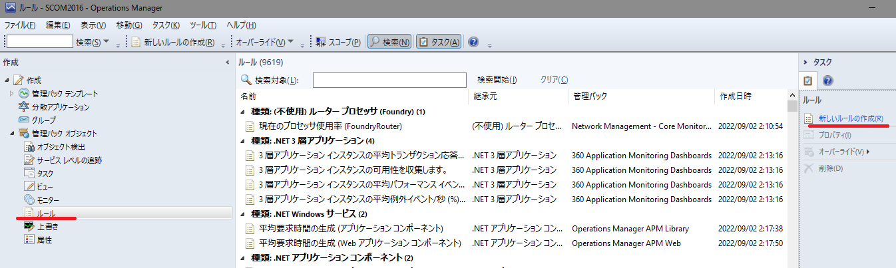
- [ルールの作成ウィザード] の [作成するルールの種類を選択] で [スクリプト (パフォーマンス) ] を選択して [次へ] をクリックします。
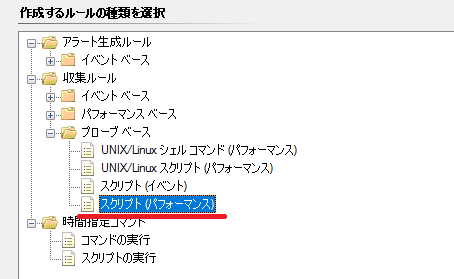
- [全般] 画面で [ルールのターゲット] に Windows に関する任意のターゲットを指定し、[次へ] をクリックします。
例えば、今回作成するルールの対象を Windows Server 2016 以降の OS を対象とする場合、ターゲットは [Windows Server 2016 以降のコンピューター] を選択します。
インポートしている管理パックのバージョンにより [Windows Server 2016 以降のコンピューター] が存在しない場合は、下位のバージョンの [Windows Server XXXX のコンピューター] を選択してください。
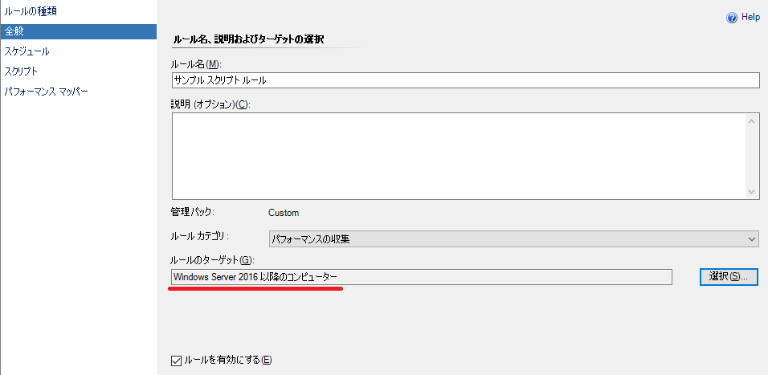
- スクリプトを実行してデータ収集する間隔を設定します。
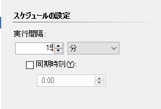
- スクリプト情報の入力画面にスクリプトをセットします。
※スクリプト画面には固定で 「10」 を返すひな形かセットされています。
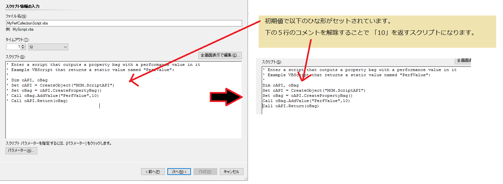
重要なメソッドは以下の値をセットしている箇所です。
1 | Call oBag.AddValue("PerfValue", 10) |
ここに皆さまの方で用意されたスクリプトが取得した値をセットするようにしてください。
サンプルとして 0 ～ 1000 までのランダムな数値をセットするスクリプトは以下の通りです。
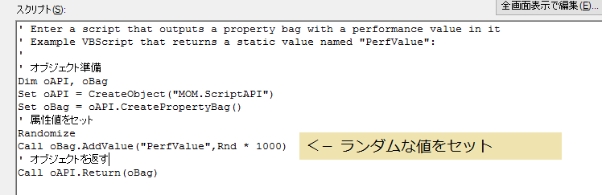
スクリプトは以下の通りです。
1 | ' オブジェクト準備 |
- パフォーマンス マッピング画面を確認して [作成] をクリックします。
この設定内容が、後続の手順のパフォーマンスビューでパフォーマンスデータを表示した際に表示されるパフォーマンスデータに関する情報となります。
“オブジェクト”、”カウンター” および “インスタンス” は表示されるパフォーマンスデータの情報に関する内容を指定するものですので、必要に応じてデータを識別しやすい名称にします。
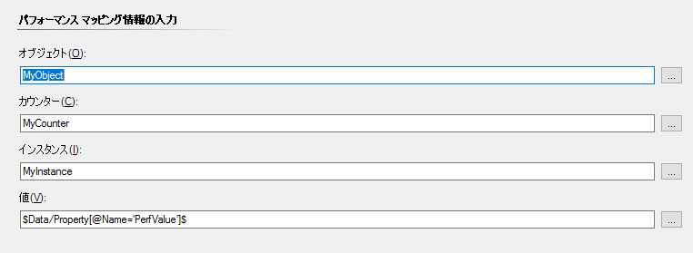
以上で、任意のスクリプトの値を指定間隔で収集する [ルール] の作成は完了です。
次に、この情報を表示する [パフォーマンス ビュー] を作成します。
- SCOM コンソールの画面左下ペインの [監視] をクリックして、[監視] 画面を開きます。
- 右クリックメニュー の [新規] -> [パフォーマンス ビュー] をクリックします。
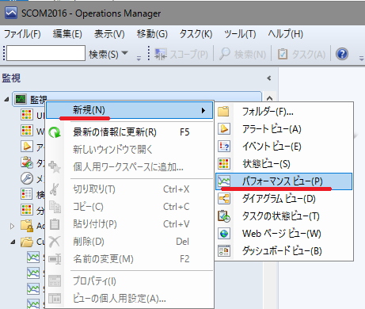
- [特定のルールによって収集された] にチェックを入れて、画面下部の [条件の説明] で、上で作成したルールを選択して [OK] をクリックします。
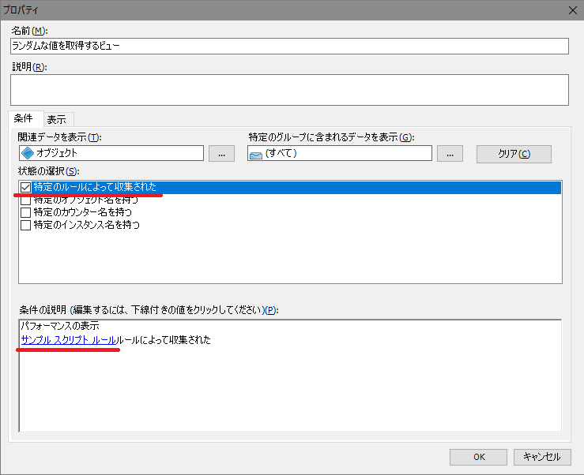
以下の通り、ランダムな値を取得する VBS を実行して収集した値が表示されます。
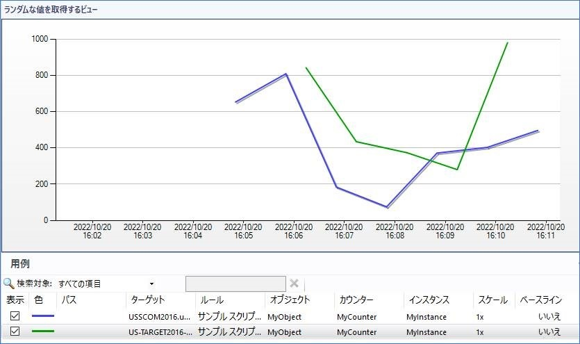
以上で、スクリプトの返り値をパフォーマンスデータとして収集する [ルール] と収集データを表示する [ビュー] の作成が完了です。
② スクリプトの返り値に対してしきい値を設定してアラートを生成する手順
- SCOM コンソールにログインして、画面左下ペインの [作成] をクリックして、[作成] 画面を開きます。
- [作成] -> [管理パックオブジェクト] -> [モニター] をクリックして、画面中央の一覧から対象の OS 種類を選択します。
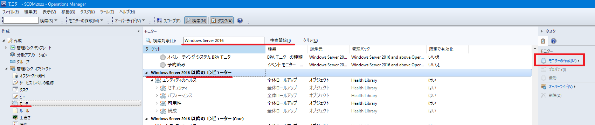
- 画面右ペインで [モニター] -> [モニターの作成] をクリックして [ユニットモニター] を選択します。
- [モニターの種類] で [スクリプト機能] -> [一般] の中から該当するモニター種類を選択して、[次へ] をクリックします。
※今回の例では [タイマー スクリプト - 2 つの状態の監視] を選択しました。
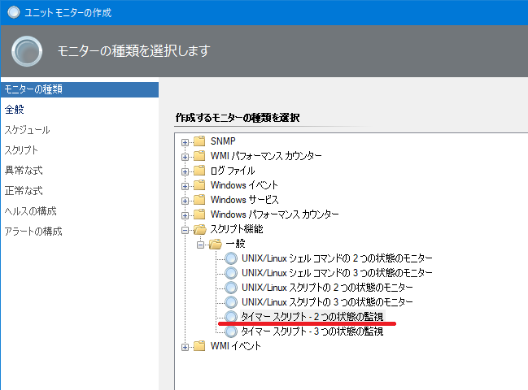
- [全般] 画面で [モニターのターゲット] に Windows に関する任意のターゲット (以下図は例として [Windows Server 2016 以降のコンピューター] を指定) を選択して [次へ] をクリックします。
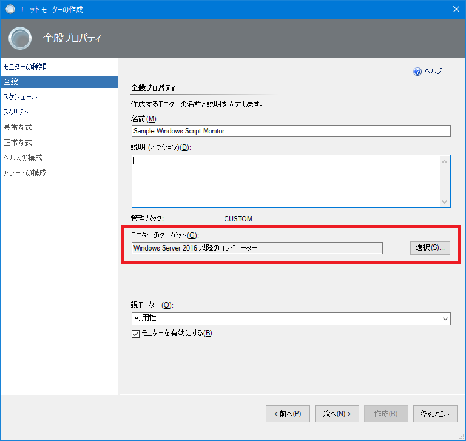
- 任意のスケジュールを設定して [次へ] をクリックします。
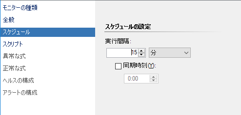
- スクリプト情報の入力画面にスクリプトをセットします。
※スクリプト画面には固定で 「OK」 という文字列を返すひな形かセットされています。
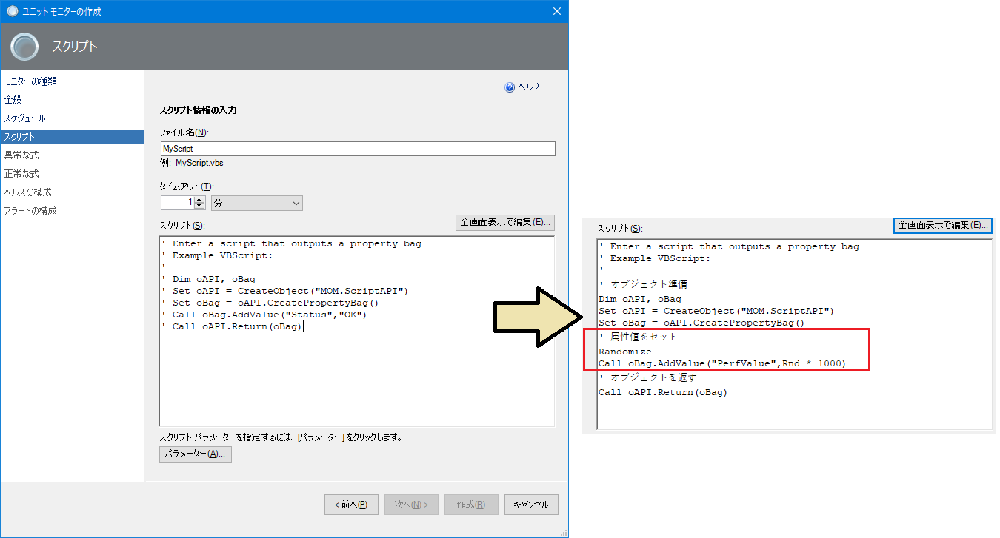
上の [ルール] の時と同様に、サンプルとして 0 ～ 1000 までのランダムな数値を返すように修正します。
スクリプトは以下の通りです。
1 | ' オブジェクト準備 |
ファイル名に拡張子を追加すると [次へ] ボタンが有効になりますので、[次へ] をクリックします。
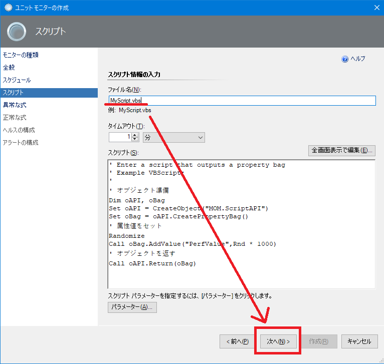
- [異常な式] にエラーとなる返り値を設定して [次へ] をクリックします。
※下の画面ショットは返り値が 700より大きい場合にエラーとする設定です。
パラーメーター名にはスクリプト内で用いたパラメーター PerfValue を用いて Property[@Name=’PerfValue’] を設定します。
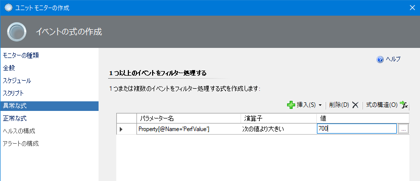
- [正常な式] にエラーが回復する返り値を設定して [次へ] をクリックします。
※下の画面ショットは返り値が 700以下になった場合に正常に回復する設定です。
パラーメーター名にはスクリプト内で用いたパラメーター PerfValue を用いて Property[@Name=’PerfValue’] を設定します。
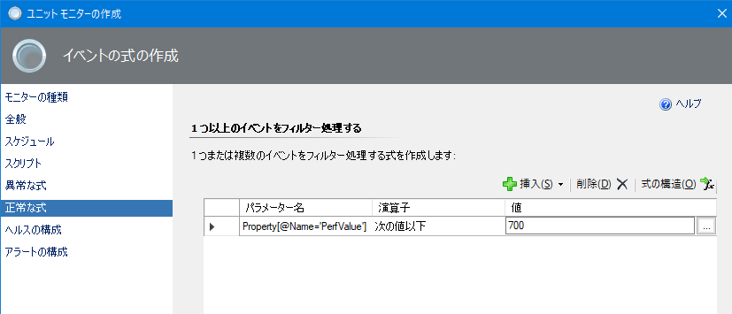
- [ヘルスの構成] を設定して [次へ] をクリックします。
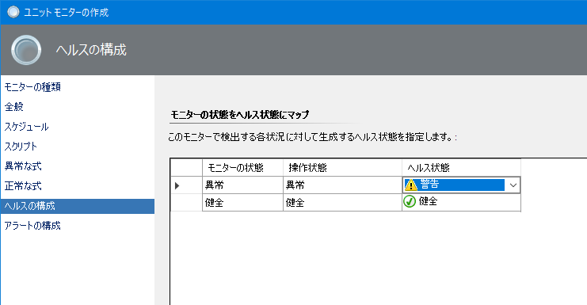
- ヘルス状態の変化でアラートを生成する場合は [このモニターにアラートを生成する] にチェックを入れて [作成] をクリックします。
※アラートの重大度は任意に指定可能です。
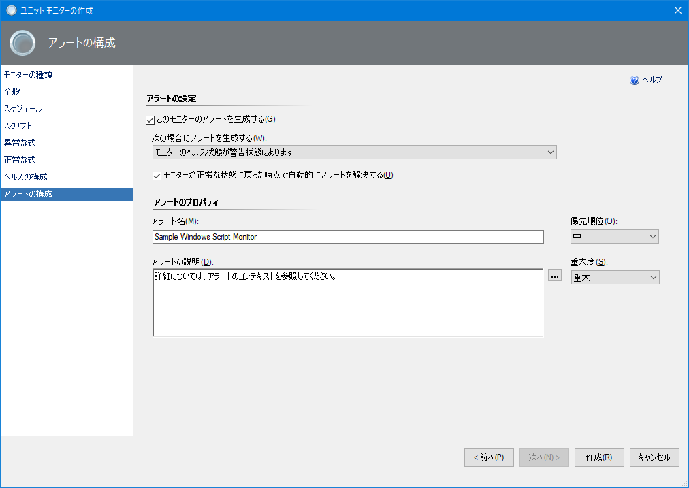
これにより、スクリプトの返り値に応じてアラートを生成する [モニター] の作成が完了です。
いかがでしょうか。
まとめますと、スクリプトの返り値をパフォーマンス データとして収集する場合は [ルール] を作成して参照用の [パフォーマンス ビュー] を用意します。
しきい値を設定してアラートを生成する場合は [モニター] を作成します。
ルールもモニターも [スクリプト] 画面で、Windows サーバーで実行するスクリプトを記述します。
最後にスクリプトの記述方法について少しだけ補足します。
【 スクリプトの記述方法の補足 】
スクリプト画面で入力するスクリプトは、以下のメソッドで値をセットすることで SCOM にデータを送ることができます。
1 | Call oBag.AddValue("PerfValue", 10) |
C ドライブの残容量を取得するサンプルを下に貼りましたので、参考にしていただければと存じます。
赤枠で囲った個所は [C ドライブの残容量を取得する処理] です。
SCOM に依存しないスクリプトです。
取得した値を Call oBag.AddValue() にセットしています。
この例の通り、まずは単独で動作する情報収集スクリプトを実装します。
それをスクリプト内に挿入し、取得した値を Call oBag.AddValue() にセットするというのが作法になります。
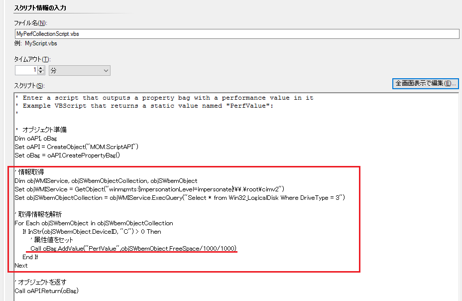
スクリプトは以下の通りです。
1 | ' オブジェクト準備 |
収集したデータはパフォーマンス ビューにて確認できます。
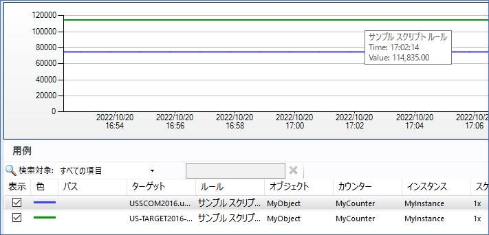
本記事を参考にご要件に応じたスクリプト監視を設定いただければ幸いです。
※本情報の内容（添付文書、リンク先などを含む）は、作成日時点でのものであり、予告なく変更される場合があります。